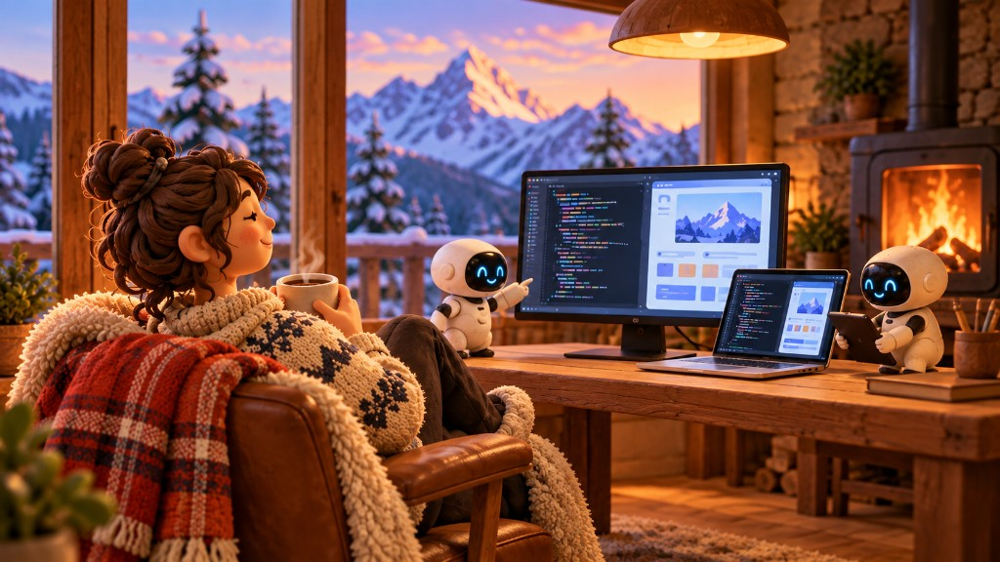

Après-prompt: что происходит с работой, когда агент работает без тебя
После Enter
Есть такое понятие après‑ski. Буквально «после лыж». Сначала это были просто посиделки после катания, но постепенно вокруг них выросла целая культура: одежда, музыка, бары в горах, шале, горячие напитки, свой визуальный стиль. В какой‑то момент то, что происходит после лыж, стало почти такой же важной частью поездки, как само катание.
С AI сейчас происходит что‑то похожее. Ты открываешь Claude Code или Codex, формулируешь задачу, добавляешь контекст, нажимаешь Enter, и дальше агент начинает работать сам. Он читает репозиторий, ищет нужные файлы, меняет код, запускает тесты, получает ошибку, исправляет её и идёт дальше. Иногда возвращается назад и переделывает то, что уже написал.
А ты в этот момент уже ничего не печатаешь. Первое время это воспринимается странно: вроде бы ты работаешь, но руками ничего не делаешь. Потом привыкаешь, и этот промежуток между «сделай» и «готово» начинает занимать всё больше времени. Я называю его Après‑prompt.
Компьютер больше не требует постоянного внимания
Последние десятилетия работа за компьютером строилась примерно одинаково: человек почти непрерывно взаимодействовал с интерфейсом. Пишешь текст, двигаешь объекты в Figma, переключаешь вкладки, меняешь CSS, возвращаешься в IDE, снова что‑то вводишь. Даже хорошие инструменты в основном ускоряли отдельные действия, но сами работу за тебя не продолжали.
Агенты меняют именно это. Человек всё чаще становится не исполнителем каждого отдельного шага, а тем, кто формулирует задачу, задаёт ограничения и принимает результат. Раньше работа и взаимодействие с компьютером почти совпадали по времени. Теперь они начинают расходиться: компьютер продолжает работать, когда ты уже убрал руки с клавиатуры.
И это, кажется, намного более важное изменение, чем просто «AI пишет код быстрее». Меняется сама форма работы.
Работа превращается в управление процессами
Я всё чаще замечаю у себя другой режим. Вместо одной задачи, которую я последовательно делаю руками, параллельно работают несколько процессов. Один агент разбирается с архитектурой, второй исправляет UI, третий пишет тесты, где‑то отдельно идёт сборка.
Ты поставил первую задачу, пока она выполняется сформулировал вторую, вернулся к первой, посмотрел diff, отправил на доработку, переключился на третью. Работа начинает немного напоминать управление маленькой командой, только вся эта команда живёт у тебя на ноутбуке.
Из этого появляется новая проблема, которой раньше почти не было: что делать человеку, пока машина работает? И чем длиннее становятся автономные цепочки действий, тем важнее становится ответ на этот вопрос.
Ожидание становится частью интерфейса
У классического интерфейса была довольно простая задача: как можно быстрее показать пользователю результат. Нажал кнопку, что‑то произошло. Перетащил объект, он сразу переместился. Открыл страницу, она загрузилась.
У AI‑интерфейсов всё иначе. Некоторые операции занимают несколько секунд, другие несколько минут, а агент может выполнить десятки действий до того, как снова понадобится человек. Поэтому ожидание уже нельзя считать только технической задержкой. Оно становится отдельным состоянием продукта.
Если Claude работает 40 секунд, вопрос уже не только в скорости модели. Вопрос в том, что происходит с пользователем эти 40 секунд. Он смотрит в терминал? Читает лог? Уходит делать другую задачу? Получает уведомление после завершения? Может запустить ещё одного агента параллельно?
Отсюда появляются довольно странные на первый взгляд вещи: панели над строкой ввода, новости во время работы агента, дыхательные анимации, уведомления о завершении, отдельные приложения для наблюдения за несколькими сессиями. Но сама идея здесь важнее конкретных реализаций. Если раньше интерфейс старался удерживать внимание человека, то теперь он может прямо говорить: можешь пока не смотреть на меня.
Рабочий стол тоже может измениться
Если агенты продолжат становиться автономнее, изменится не только софт. Может поменяться само устройство рабочего места.
Сегодня desktop по‑прежнему построен вокруг идеи, что человек активно работает в одном приложении: большое окно, курсор, клавиатура, активный фокус. Но если одновременно работают пять или десять агентов, основной интерфейс может выглядеть совсем иначе. Не IDE на весь экран, а диспетчер процессов: что сейчас выполняется, что закончено, где появился конфликт, какая задача заблокирована и где требуется моё решение.
То есть вместо привычного «рабочего стола» появляется что‑то ближе к control center. Мне кажется, именно поэтому сейчас возникает столько инструментов для управления агентами, терминалами и параллельными сессиями. Мы пытаемся натянуть новую модель работы на интерфейсы, которые изначально создавались для мира «один человек, одна программа, одна активная задача».
Этот паттерн постепенно перестаёт работать.
Главным навыком становится не скорость выполнения
Если агент за несколько минут делает то, на что раньше уходил час, скорость самого человека перестаёт быть главным ограничением. Уже не так важно, насколько быстро ты печатаешь, как быстро собираешь интерфейс руками или насколько хорошо помнишь синтаксис.
Важнее становится другое: насколько хорошо ты умеешь поставить задачу, какой контекст дать, какие ограничения задать, как разбить проблему, где агенту можно довериться, а где нужно остановить его. И главное — как быстро понять, что решение выглядит убедительно, но на самом деле неверно.
Часть работы постепенно перемещается из execution в judgement. Мы меньше времени тратим на непосредственное производство результата и больше — на постановку задачи, проверку и принятие решений.
Поэтому AI не просто ускоряет старый процесс. Он меняет то, из чего вообще состоит работа человека.
У работы появляется другой ритм
У обычной компьютерной работы ритм довольно ровный: сделал действие, получил результат, сделал следующее. С агентами он становится другим. Сначала короткий период высокой концентрации: нужно понять задачу, собрать контекст и нормально её сформулировать. Потом Enter и пауза. Затем возвращение, проверка, корректировка и новый запуск.
Иногда несколько таких циклов идут одновременно. Терминалы работают сами, где‑то появляется уведомление, где‑то агент ждёт подтверждения. Ты можешь выпить кофе, пройтись по комнате или переключиться на другую задачу не потому, что отвлёкся от работы, а потому что работа продолжает идти без твоего непосредственного участия.
Мне кажется, именно здесь и появляется новая эстетика. Несколько терминалов, маленькие статусы выполнения, звуки завершения задач, панели наблюдения за агентами. Рабочее место начинает отражать не постоянное действие человека, а параллельную работу процессов.
Это не свободное время
Важно не перепутать: Après‑prompt не означает, что AI внезапно подарил нам много свободного времени. Освободившийся промежуток почти сразу заполняется другой работой. Ты запускаешь ещё одного агента, проверяешь предыдущий результат, читаешь документацию, думаешь над следующей задачей.
Если одна задача стала занимать меньше времени, человек довольно быстро найдёт ещё пять. Поэтому мне кажется более интересным не вопрос «будем ли мы работать меньше», а вопрос «как вообще будет выглядеть работа».
Она становится менее непрерывной, более параллельной и сильнее завязанной на постановку задач и проверку результатов. Меньше ручного исполнения, больше управления.
И это касается не только кода
Сейчас этот сдвиг особенно заметен в разработке, потому что coding agents уже достаточно автономны. Но нет причин считать, что всё остановится на программировании.
Дизайнер может сказать: «Собери три варианта страницы в рамках нашей дизайн‑системы, проверь accessibility и сравни с текущей версией». Аналитик: «Проверь данные за последние три месяца, найди аномалии и подготовь гипотезы». Продакт: «Разбери обращения пользователей, сгруппируй проблемы и сопоставь их с roadmap».
Во всех этих сценариях человек запускает работу, но не выполняет каждый её шаг самостоятельно. Значит, Après‑prompt может стать не особенностью разработки, а обычным состоянием интеллектуальной работы.
Возможно, интерфейс будущего — это очередь
Сегодня AI чаще всего добавляют в продукты в виде чата. Есть привычный интерфейс, рядом поле ввода, туда пишется запрос. Но если агенты действительно станут автономными, возможно, чат вообще не окажется главным интерфейсом.
Гораздо важнее может стать очередь задач: что сейчас работает, что закончилось, что требует решения, где агент застрял, что изменилось со вчера и что можно запустить дальше. Не история сообщений, а рабочая память и текущее состояние процессов.
В этом смысле сегодняшние терминальные агенты могут оказаться чем‑то вроде командной строки ранних компьютеров. Очень мощным инструментом для специалистов, из которого позже вырастет совсем другой класс интерфейсов.
Après‑prompt
Мне нравится это слово не только потому, что оно смешное. Оно довольно точно описывает новое состояние: работа уже началась, результата ещё нет, а человек временно не нужен.
Раньше такой промежуток считался технической проблемой. Мы называли его loading time и старались максимально сократить. Теперь он становится самостоятельной частью рабочего процесса.
И, возможно, вокруг него действительно появится своя культура: свои приложения, ритуалы, интерфейсы, способы организовывать рабочее место и даже своя эстетика. Через несколько лет нам, возможно, будет немного странно вспоминать, что человек мог восемь часов подряд сидеть перед монитором и собственными руками выполнять каждое действие.
А пока мне нравится название Après‑prompt.
Время между «сделай» и «готово».